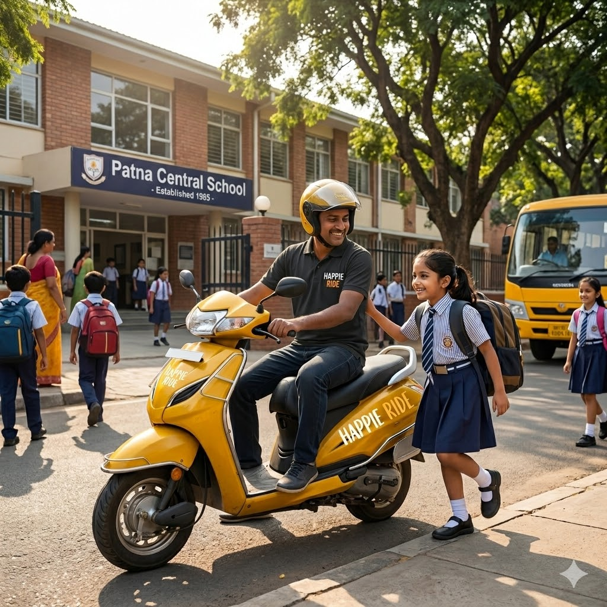

-Photoroom.png)

Our Premium Services
Discover how Happie Ride transforms the daily school commute into a secure, structured, and premium transit experience tailored for families.
01. Door-to-Door Transit
Reliable transit operating straight from your doorstep to the school gates. We eliminate the need for early morning walks to crowded common bus stops or stressful main-road drop-offs.
- Customized pickup coordinates directly mapped to your residential gate.
- Precise arrival windows to prevent students from waiting outside in extreme weather.
- Direct coordination between assigned riders and parents at the point of handover.
02. Route Alerts & Notifications
Complete peace of mind through organized journey updates. Parents stay constantly informed regarding transit milestones, ensuring full accountability throughout the route.
- Instant automated notifications when the rider arrives at your doorstep.
- Safe-arrival check-ins transmitted immediately upon successful school gate arrival.
- Direct communication channel logs for instantaneous status verification.
03. Professionally Vetted Riders
Every single Happie Ride operator undergoes a highly rigorous multi-tier verification process before executing individual student routes.
- Comprehensive identity authentication and mandatory background checks.
- Stringent driving competency test parameters executed on standard routes.
- Trained extensively in road safety protocols and professional communication codes.
04. Safety First Culture
We treat student safety as our highest priority operational metric. Our logistics workflow is engineered to minimize road risks from pickup to drop-off.
- Strictly regulated maximum speed controls applied uniformly to all operators.
- Mandatory high-grade protective gear requirements for riders and students.
- Routine safety compliance evaluations conducted on all vehicles in the pool.
05. Flexible Academic Scheduling
School schedules shift, and we adjust alongside them. Our monthly transport plans accommodate routine changes in standard school hours seamlessly.
- Adjustable timings mapped directly to special school schedules or exam calendars.
- Optimized route planning designed around individual institutional clock-in times.
- Easy digital channel notifications for planned student absences or sick leaves.
06. Dedicated Support Infrastructure
Our operations support desk stands constantly available to address logistics updates, route inquiries, or unexpected transit alterations immediately.
- Direct routing channels to emergency coordinators during active pickup/drop-off cycles.
- Rapid resolution systems managing address revisions or rider swaps.
- Dedicated personal assistance lines to handle monthly billing questions cleanly.